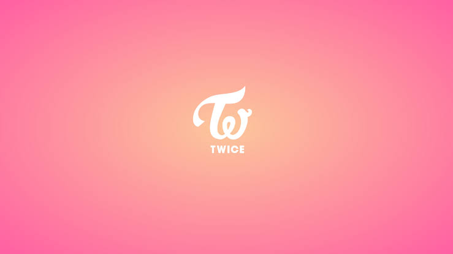

EXO currently consists of 9 members: Suho, Xiumin, Lay, Baekhyun, Chen, Chanyeol, D.O., Kai, and Sehun.
Former members: Kris, Tao and Luhan. EXO debuted on April 8, 2012, under SM Entertainment.
EXO Fandom Name: EXO-L
EXO Official Fan Color: Cosmic Latte
EXO Official Accounts:
Instagram: @weareone.exo
Twitter: @weareoneEXO
Facebook: weareoneEXO
vLive: EXO channel
Official Website: exo.smtown.com
Youtube: EXO Channel
EXO Members Profile:
Stage Name: Xiumin
Birth Name: Kim Min Seok
Chinese Name: Jin Min Shuo
Position: Sub Vocalist, Sub Rapper
Birthday: March 26, 1990
Zodiac sign: Aries
Height: 172 cm
Weight: 57 kg
Nationality: Korean
Blood Type: B
Hometown: Guri, Gyeonggi province, South Korea
Subunit: EXO-M,EXO-CBX
Super Power (Badge): Frost
Instagram: @e_xiu_o
Stage Name: Suho
Birth Name: Kim Jun Myeon
Chinese Name: Jin Jun Mian
Position: Leader, Lead Vocalist, Visual
Birthday: May 22, 1991
Zodiac sign: Gemini
Height: 173 cm
Weight: 60 kg
Nationality: Korean
Blood Type: AB
Hometown: Apujeong neighborhood of Seoul, South Korea
Subunit: EXO-K, EXO Main Vocal Line
Super Power (Badge): Water
Instagram: @kimjuncotton
Stage Name: Lay
Birth Name: Zhang Yixing
Position: Main Dancer, Sub Vocalist, Sub Rapper
Birthday: October 7, 1991
Zodiac sign: Libra
Height: 176 cm
Weight: 60 kg
Nationality: Chinese
Blood Type: AB
Hometown: Changsha, Hunan, China
Subunit: EXO-M
Super Power (Badge): Healing
Instagram: @layzhang
Twitter: @layzhang
Youtube: LAY
Stage Name: Baekhyun
Birth Name: Byun Baek Hyun
Chinese Name: Bian Buo Xian
Position: Main Vocalist
Birthday: May 6, 1992
Zodiac sign: Taurus
Height: 174 cm
Weight: 64 kg
Nationality: Korean
Blood Type: O
Hometown: Bucheon, Gyeonggi Province, South Korea
Subunit: EXO-K, EXO-CBX, EXO Main Vocal Line
Super Power (Badge): Light
Instagram: @baekhyunee_exo
Twitter: @b_hundred_hyun
Weibo: baekhyunee7
Youtube: Baekhyun
Others: Leader and Main Vocalist of SuperM

Stage Name: Chen
Birth Name: Kim Jong Dae
Chinese Name: Jin Zhong Da
Position: Main Vocalist
Birthday: September 21, 1992
Zodiac sign: Virgo
Height: 172.5 cm
Weight: 60 kg
Nationality: Korean
Blood Type: B
Hometown: Siheung, Gyeonggi province
Subunit: EXO-M, EXO-CBX, EXO Main Vocal Line
Super Power (Badge): Thunder
Youtube: Chen
Stage Name: Chanyeol
Birth Name: Park Chan Yeol
Chinese Name: Piao Can Lie
Position: Main Rapper, Sub Vocalist, Visual
Birthday: November 27, 1992
Zodiac sign: Sagittarius
Height: 186 cm
Weight: 70 kg
Nationality: Korean
Blood Type: A
Hometown: Seoul, South Korea
Subunit: EXO-K, EXO-SC
Super Power (Badge): Light
Instagram: @real_pcy
Weibo: @real_pcy
Youtube: NNG
Stage Name: D.O.
Birth Name: Do Kyung Soo
Chinese Name: Du Qing Zhu
Position: Main Vocalist
Birthday: January 12, 1993
Zodiac sign: Capricorn
Height: 172 cm
Weight: 60 kg
Nationality: Korean
Blood Type: A
Hometown: Goyang,Gyeongi Province, South Korea
Subunit: EXO-K, EXO Main Vocal Line
Super Power (Badge): Force
Stage Name: Kai
Birth Name: Kim Jong In
Chinese Name: Jin Zhong Ren
Position: Main Dancer, Sub Rapper, Sub Vocalist, Center, Visual
Birthday: January 14, 1994
Zodiac sign: Capricorn
Height: 180 cm
Weight: 67 kg
Nationality: Korean
Blood Type: A
Hometown: Suncheon,South Jeolla Province/Jeollanam-do, South Korea
Subunit: EXO-K
Super Power (Badge): Teleportation
Instagram: @zkdlin
Stage Name: Sehun
Birth Name: Oh Se Hun
Chinese Name: Wu Shi Xun
Position: Lead Rapper, Lead Dancer, Visual, Maknae
Birthday: April 12, 1994
Zodiac sign: Aries
Height: 183 cm
Weight: 66 kg
Nationality: Korean
Blood Type: O
Hometown: Seoul, South Korea
Subunit: EXO-K, EXO-SC
Super Power (Badge): Wind
Instagram: @oohsehun